R.utils::sourceDirectory(here::here("src", "functions"))Visualizing associations
Overview
The goal of this module is to introduce some ways to visualize associations among variables. Simple scatterplots containing x and y variables that are numeric or factor/character variables will be created as well as multiclass scatterplots. Some plot aesthetics will be set and mapped to create different types of plots.
To Do
Complete the corresponding Canvas Video. Consider reviewing and practicing concepts so that you are able to utilize your skills during in-class exercises. If you have only watched the video but have not interacted with the material, you will likely be unable to complete the exercises and will be expected to complete them outside of class as part of your course allocation time.
Optional Readings
External Functions
Provided:
view_html(): for viewing data frames in html format, from /src/functions/view_html.R
Libraries
- {here}: 1.0.1: for path management
- {dplyr} 1.1.4: for selecting, filtering, and mutating
- {ggplot2} 3.5.1: for plotting
Loading libraries
library(dplyr)
library(ggplot2)Loading Data
To examine some associations, we will use some swimming event times which can be accessed from:
https://raw.githubusercontent.com/slicesofdata/dataviz24/main/data/processed/cleaned-2023-cms-invite.csvTo access the data, either read the file directly from the url using read.csv() and assign the data frame a name like SWIM:
read.csv("https://raw.githubusercontent.com/slicesofdata/dataviz24/main/data/processed/cleaned-2023-cms-invite.csv")
Or download it and save to the /data/processed directory and read from there.
SWIM <- read.csv(here::here("data", "processed", "cleaned-2023-cms-invite.csv"))Taking Inventory of the Data
Examine the structure of the data.
SWIM |> glimpse()Rows: 201
Columns: 10
$ Year <int> 2023, 2023, 2023, 2023, 2023, 2023, 2023, 2023, 2023, 2023, 2…
$ School <chr> "Pomona-Pitzer-CA", "Claremont-Mudd-Scripps-CA", "Claremont-M…
$ Team <chr> "Mixed", "Mixed", "Mixed", "Mixed", "Mixed", "Mixed", "Mixed"…
$ Relay <chr> "Relay", "Relay", "Relay", "Relay", "Relay", "Relay", "Relay"…
$ Distance <int> 200, 200, 200, 200, 200, 200, 200, 200, 200, 200, 200, 200, 2…
$ Name <chr> NA, NA, NA, NA, NA, NA, NA, NA, NA, NA, NA, NA, NA, NA, NA, "…
$ Age <int> NA, NA, NA, NA, NA, NA, NA, NA, NA, NA, NA, NA, NA, NA, NA, 2…
$ Event <chr> "Medley", "Medley", "Medley", "Medley", "Medley", "Medley", "…
$ Time <dbl> 97.74, 101.34, 101.64, 102.21, 102.83, 102.93, 103.55, 103.63…
$ Split50 <dbl> 26.35, 24.40, 24.06, 24.99, 24.37, 27.46, 28.54, 26.75, 25.77…Visualizing Associations
One of the most familiar forms of associations for students of statistics is a linear association. The strength of a linear fit may be estimated using a linear model and then visualized with a scatterplot or scattergram. The scatterplot is the hallmark point point created using {ggplot} using geom_point() and is used to plot points corresponding to data pairs on x and y axes of a Cartesian coordinate plane.
Plotting points on a Cartesian coordinate plane`
We will use geom_point() to help us construct the geom layer of a plot with the intended goal of visualizing associations in data. Whereas estimated model parameters are distilled to a few point and interval estimates obtained from numerous data points, a scatterplot typically depicts all of the data, providing a rich graphical depiction of point clustering, dispersion, grouping, linearity, nonlinearity (e.g,. curvature), cycles for time variables, point alienation away from other points, which may be referred to as outliers, and much more. Whereas, knowing how to how to lie with statistics can often involve omitting data to your favor, visualizations tend to represent all of the data. When lying occurs, that’s because some data have already been omitted before the visualization is created or because the plot is created in a way that flouts the visual system.
We will use the SWIM data frame for the examples. In some instances, we will filter out some data in order to illustrate how {ggplot2} functions work and influence the returned visualization. The filtering of data used herein should not be taken as a suggestion to trim data with the intended goal to create a pretty plot or mislead others.
A Simple Scatterplot with geom_point()
The typical xy scatter plot is used to visualize the relationship between two numeric variables. Those numeric variables may be continuous or discrete, though you will see that data visualizations involving discrete numeric data do have some limitations. We will attempt to circumvent some of those limitations using different functions from {ggplot2} in the examples presented. These approaches used can also be applied to continuous data.
As with all geoms, geom_point() can accept its own data and aesthetics or inherit them from the initialized ggplot() object. Similar to geom_col(), we need an x and a y variable to create a point plot. The specification of x or y may depended on variables as predictors or outcomes or based on the goal of the plot.
Because we have swim data representing completion times for events of different distances, we will set x = Distance and y = Time so that we can visualize Time as a function of Distance.
Taking the data frame and piping that to ggplot(), we declare the data and the mapping to x and y.
geom_point(
mapping = NULL,
data = NULL,
stat = "identity",
position = "identity",
...,
na.rm = FALSE,
show.legend = NA,
inherit.aes = TRUE
)We can add the geom_point() layer that instructs how to display the data. Right out of the box, we get:
SWIM %>%
ggplot(data = .,
mapping = aes(x = Distance, y = Time)) +
geom_point()
Your first point plot! You see small black points, axis labels, tick marks for intervals, and some apparent clustering of points around certain distances. You also see the association between distances and time, a positive association.
We will filter some of the event data to illustrate the {ggplot2} functionality.
SWIM |>
filter(Distance < 1500) |>
ggplot(mapping = aes(x = Distance, y = Time)) +
geom_point()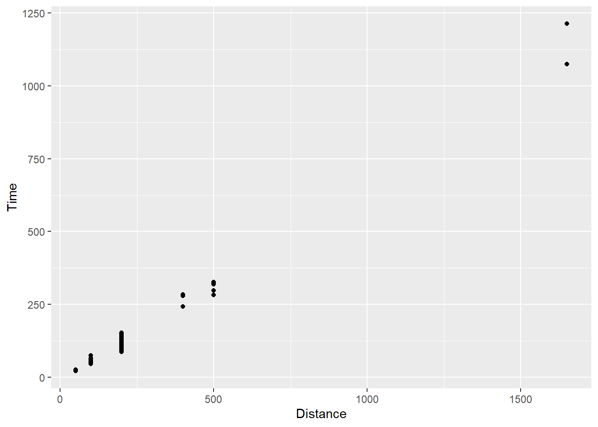
The association is still apparent in the plot. The tick marks along the x-axis changed but the clustering of points is still present. We will reserve discussion of axes for a later topic but the clustering is still present. This issue will often present itself when plotting a continuous variable like time against a discrete variable like event distance.
In another world, the variables may be reversed such that swimmers are tasked with swimming for a given time t, and their performance outcome is the distance they traveled. On one hand, this approach may be efficient because there would be no waiting around for slower swimmers to finish an event. On the other hand, measurement of distance in a liquid medium may be extremely difficult and time consuming, event completion may be lack luster for athletes, and the wait for results would be annoyingly painful for fans as they wait in agony for the measurement results to declare a winner. In the end, we would still have a discrete variable, now time, and a continuous variable, now distance. The data would still plague the visualization in the same way.
Associations with some smoothing
geom_smooth() is {ggplot2}’s solution to seeing some patterns of association in the data.
geom_smooth(
mapping = NULL,
data = NULL,
stat = "smooth",
position = "identity",
...,
method = NULL,
formula = NULL,
se = TRUE,
na.rm = FALSE,
orientation = NA,
show.legend = NA,
inherit.aes = TRUE
)By default, geom_smooth() does not add a linear fit to the data. Instead, method = 'loess' applies a Loess function on y ~ x, which will highlight curvature or wiggliness of the fit moving through data. The amounts of movement of Loess can also be controlled by the span argument. You can also add your own formula to the smoothing function by passing it to the formula argument.
Adding a geom_smooth() layer:
SWIM |>
filter(Distance < 1500) |>
ggplot(mapping = aes(x = Distance, y = Time)) +
geom_point() +
geom_smooth()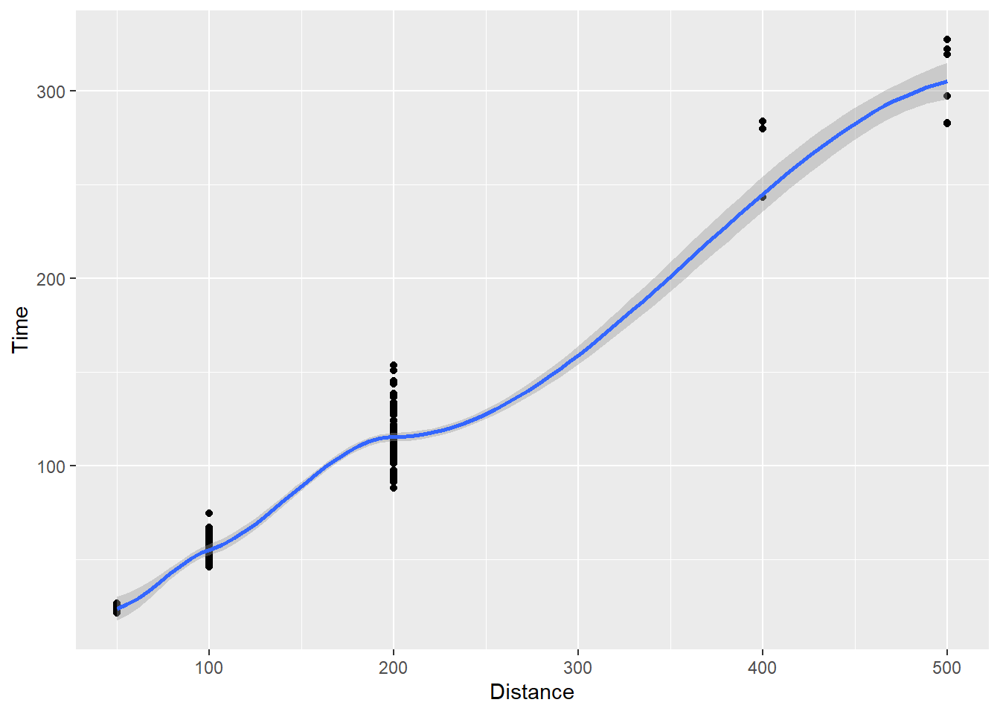
You see the function curving in blue through the data and a gray shading around it.
Importantly, you might want to apply another method of fit, for example a linear model, which you can achieve using method = "lm".
SWIM |>
filter(Distance < 1500) |>
ggplot(mapping = aes(x = Distance, y = Time)) +
geom_point() +
geom_smooth(method = "lm")`geom_smooth()` using formula = 'y ~ x'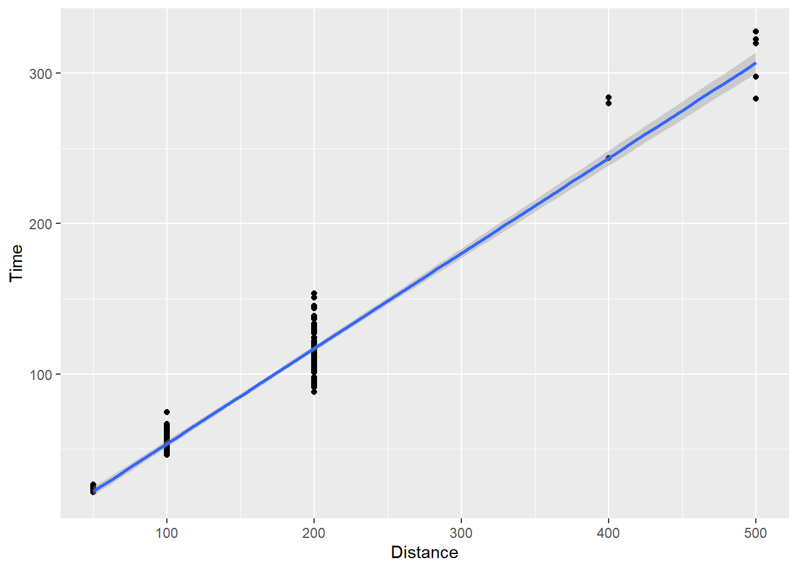
Now you see a line of best fit along with that gray shading again. That shading represents error variance in the model, which we will address in a topic on visualizing uncertainty. We can turn it off by setting se = FALSE.
SWIM |>
filter(Distance < 1500) |>
ggplot(mapping = aes(x = Distance, y = Time)) +
geom_point() +
geom_smooth(method = "lm",
se = F)`geom_smooth()` using formula = 'y ~ x'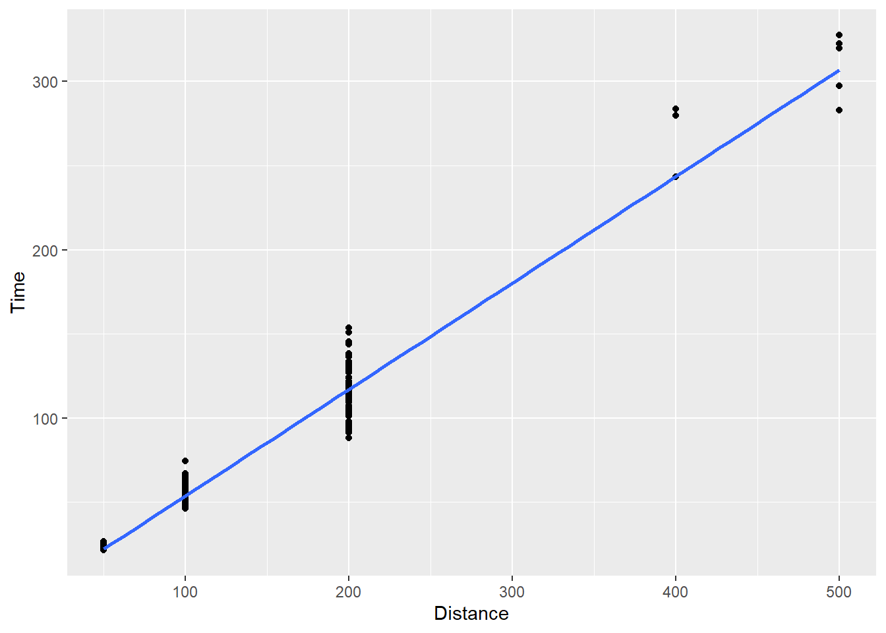
For some plots, you may also not see the fit line through the entire plot. For example, changing the limits on the x axis, from 0 to 800 by adding plot layer, xlim(0, 800), will demonstrate a problem that you might experience and wish to fix.
SWIM |>
filter(Distance < 1500) |>
ggplot(mapping = aes(x = Distance, y = Time)) +
geom_point() +
xlim(0, 800) +
geom_smooth(method = "lm")`geom_smooth()` using formula = 'y ~ x'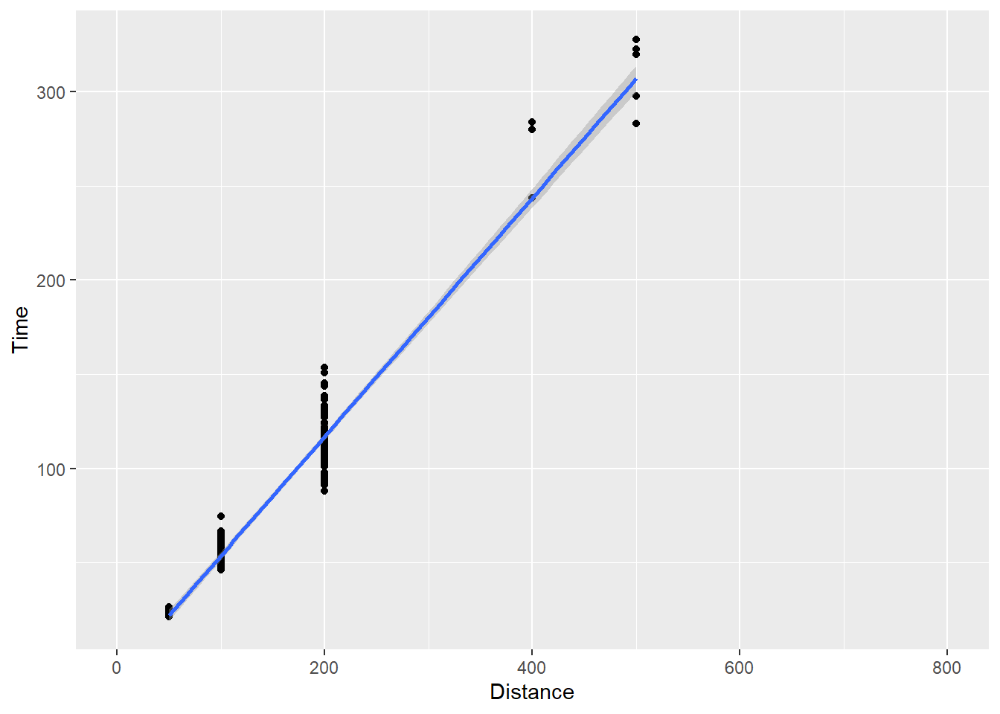
We can change the default behavior using fullrange = T:
SWIM |>
filter(Distance < 1500) |>
ggplot(mapping = aes(x = Distance, y = Time)) +
geom_point() +
xlim(0, 800) +
geom_smooth(method = "lm",
fullrange = TRUE)`geom_smooth()` using formula = 'y ~ x'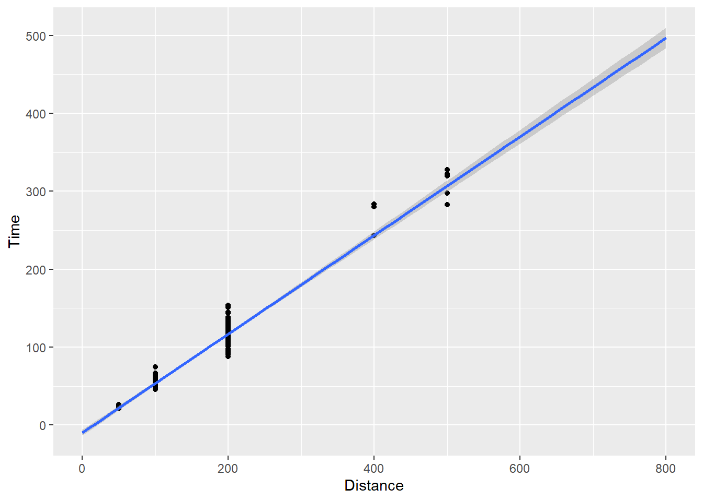
The line now extends to the limits. geom_smooth() has many options but for now you see how we can plot points and add various fits to them.
geom_point() when a variable is a factor
Point plots can all be used for plotting individual data points for factor or categorical data, let’s just convert Distance to a factor inside the mapping.
SWIM |>
filter(Distance < 1500) |>
ggplot(mapping = aes(x = factor(Distance), y = Time)) +
geom_point()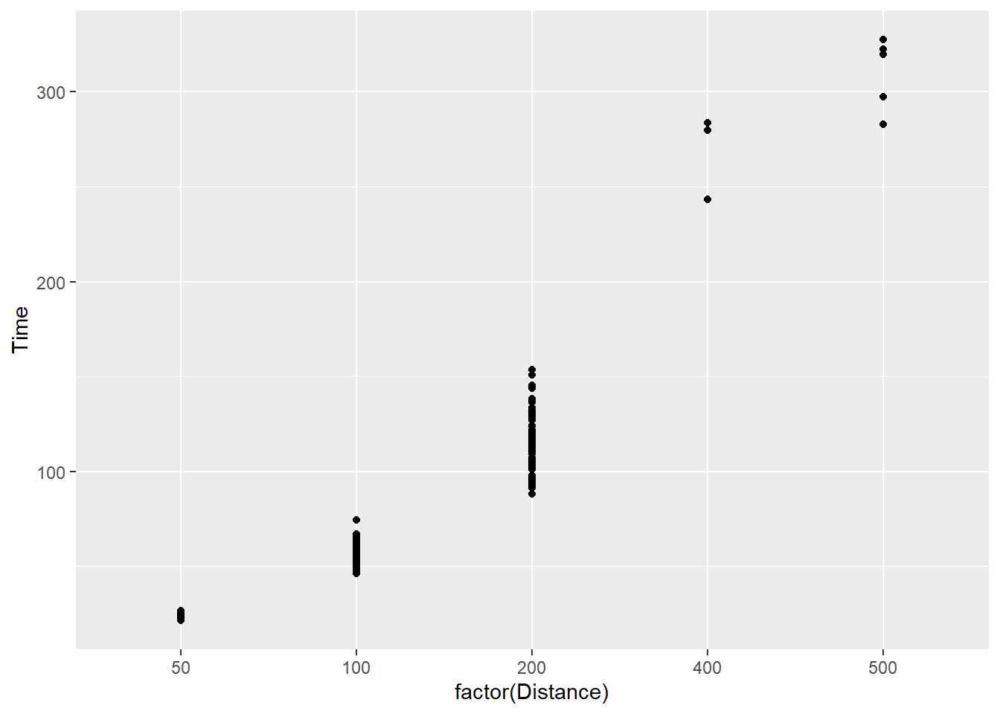
We see that something has changed? What exactly? Do you notice it?
If the character or factor variable is already in the data frame or it needs to me mutated on the fly to make it such:
SWIM |>
filter(Distance < 1500) |>
mutate(Distance = factor(Distance)) |>
ggplot(mapping = aes(x = Distance, y = Time)) +
geom_point()
What do you see? You see now that geom_point() will plot only the existing levels of Distance in the data set and provides the level label at each tick mark. If your goal is to change your tick marks for numeric data, this is not the solution because the scale will violate rules of mathematics. The intervals are all the same. This is a misrepresentation of the data.
Setting aesthetics
We can change color, fill, shape, size, and alpha of points in the plot either by setting a constant or mapping color to an aesthetic. We will address setting here and mapping later.
Here we plot open circles in black, filled with green, and make them somewhat transparent.
SWIM |>
filter(Distance < 1500) |>
ggplot(mapping = aes(x = factor(Distance), y = Time)) +
geom_point(shape = 21,
size = 3,
col = "black",
fill = "green",
alpha = .3
)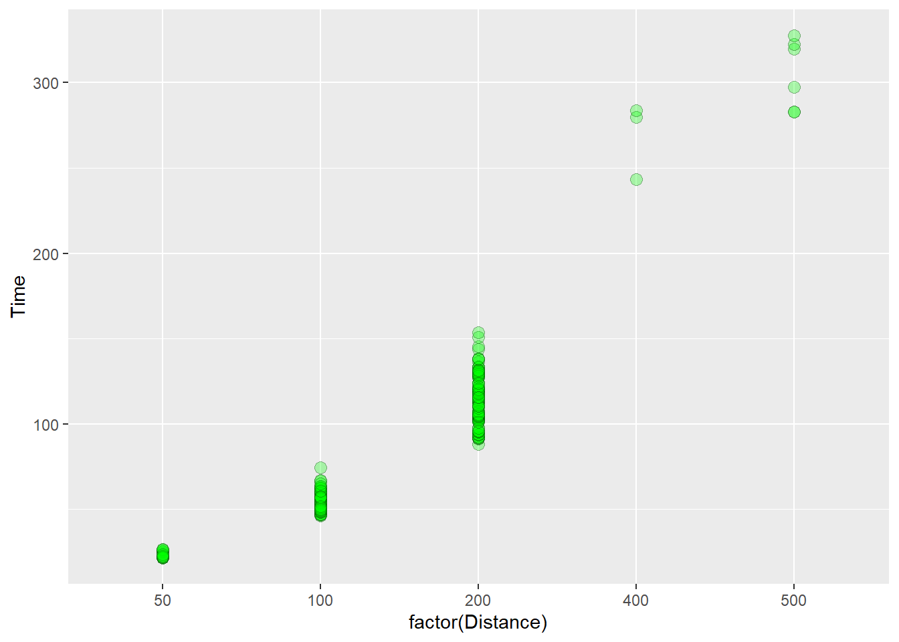
The procedure of mapping aesthetics introduces other variables from the data set into the plot. We do not need to change the color or shape of points for each event distance for the viewer to understand the plot. Position along x already communicates the distance. Mapping aesthetics of variables already present would confound the data and result in a plot that manipulates both position and color to communicate one variable, distance. This is not needed. By contrast, mapping variables that are not already present in the data introduces new information and complexity. These represent a different class of plots altogether.
Multiclass Scatterplots
The typical xy scatter plot is used to visualize the relationship between two continuous variables. When your data vary in a different way and you don’t want to create a 3-dimensional plot (you really don’t want to anyway), you can map a third variable to the point plot to create a multiclass scatterplot that decorates the plot with a new aesthetic (e.g., color, size, transparency, etc.).
In most instances, you will want to map categorical variable to aesthetics like size or shape and numeric variables to aesthetics like size and alpha.
Mapping existing variables to aesthetics
We can map an existing variable to a new aesthetic. For example, Distance is already present in the plot but we can map it the color aesthetic. using aes(col = Distance). Well, because color may best be used or categorical variables, we will make it factor on the fly.
Using mapping = aes(color = factor(Distance)), we get:
SWIM |>
filter(!is.na(Name),
Time < 1000
) |>
ggplot(mapping = aes(x = factor(Distance), y = Time)) +
geom_point(
mapping = aes(color = factor(Distance)),
alpha = .3,
position = "jitter"
)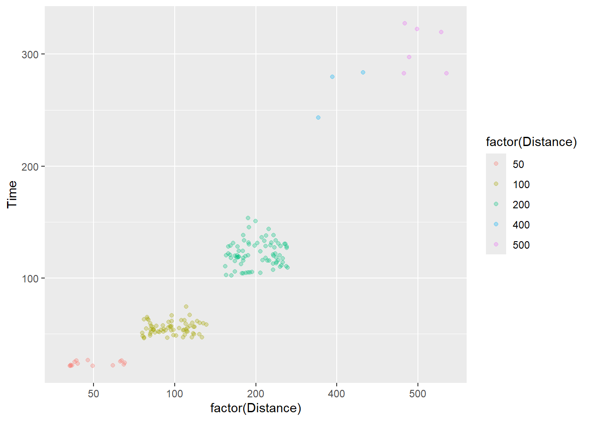
We are not encoding a third variable in this plot but rather confounding color with an existing variable in the point plot. This approach can bias attention to particular subsets of the data unintentionally especially when some colors share properties with some colors used in the plot but not others.
We could also map an existing numeric variable to the color aesthetic. Using aes(col = factor(Distance)), we get:
SWIM |>
filter(!is.na(Name),
Time < 1000
) |>
ggplot(mapping = aes(x = factor(Distance), y = Time)) +
geom_point(
mapping = aes(color = Distance),
alpha = .3
)
The darker blue points are now associated with shorter distances, which itself may be conceptually difficult but the point here is that a data element can be mapped to an aesthetic.
These two examples, however, do not may new variables that introduce new information to understand subsets of the data.
Mapping new variables to aesthetics
We can map a new variable to the plot. Looking at the variables present, we can map School to the color in order to see whether time and distance are related in the same way across schools. The legend will be really big, so we will also remove it for now using show.legend = FALSE.
SWIM |>
filter(!is.na(Name),
Time < 1000
) |>
ggplot(mapping = aes(x = factor(Distance), y = Time)) +
geom_point(
mapping = aes(col = School),
alpha = .5,
show.legend = FALSE
)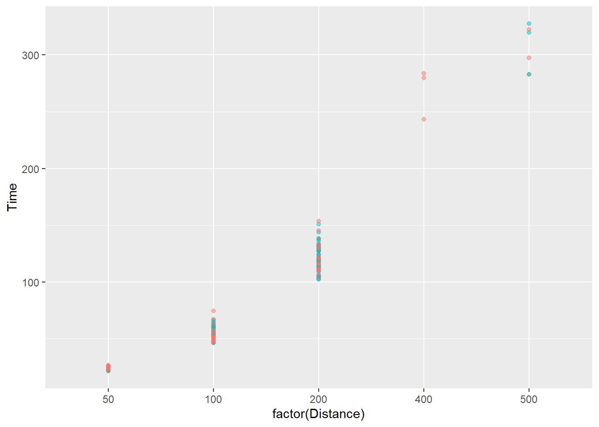
And for men and women, using Team:
SWIM |>
filter(!is.na(Name),
Time < 1000,
Team != "Mixed"
) |>
ggplot(mapping = aes(x = factor(Distance), y = Time)) +
geom_point(
mapping = aes(color = Team),
alpha = .5,
show.legend = FALSE
)
Adding model fits using geom_smooth():
In order to see a linear association, however, we might want to fit a linear model to the subsets. We will need to make sure there are no factor() or as.character() functions for the variables or you will not see a line.
Specifically, we will use geom_smooth() to add a fit line to the plot.
The pattern for all schools:
SWIM |>
filter(!is.na(Name),
Time < 1000,
Team != "Mixed"
) |>
ggplot(mapping = aes(x = Distance, y = Time)) +
geom_point(
mapping = aes(color = School),
alpha = .5,
show.legend = FALSE
) +
geom_smooth(
method = "lm",
se = FALSE,
show.legend = FALSE
)`geom_smooth()` using formula = 'y ~ x'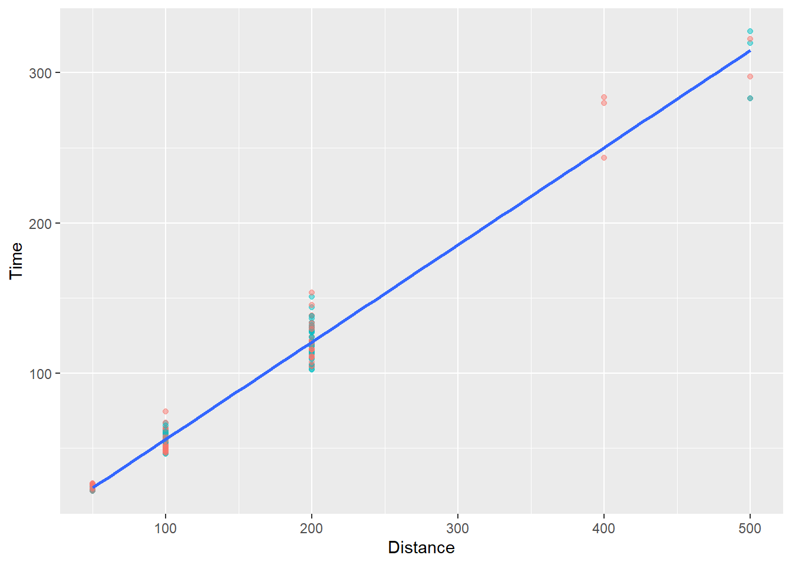
We will see that a line is fit through ALL of the data illustrating of course that time increases as a function of distance. Yes, this is silly but the main goal here is to understand how {ggplot} works.
In order to examine the linear fit pattern for all schools, we would map the School variable as an aesthetic to geom_smooth().
Notice, however, that we are now passing aes(col = School) in geom_point() to make points for schools vary by color and in geom_smooth() to apply fit lines for each school. Remember that geom_*() aesthetics are inherited from ggplot() by default (e.g., inherit.aes = TRUE).
Let’s just map aes(col = School) in ggplot() instead so that both geom_*()s inherit it.
The pattern across schools:
SWIM |>
filter(!is.na(Name),
Time < 1000,
Team != "Mixed"
) |>
ggplot(mapping = aes(x = Distance,
y = Time,
color = School)) +
geom_point(
alpha = .5,
show.legend = FALSE
) +
geom_smooth(
method = "lm",
se = FALSE,
show.legend = FALSE
)`geom_smooth()` using formula = 'y ~ x'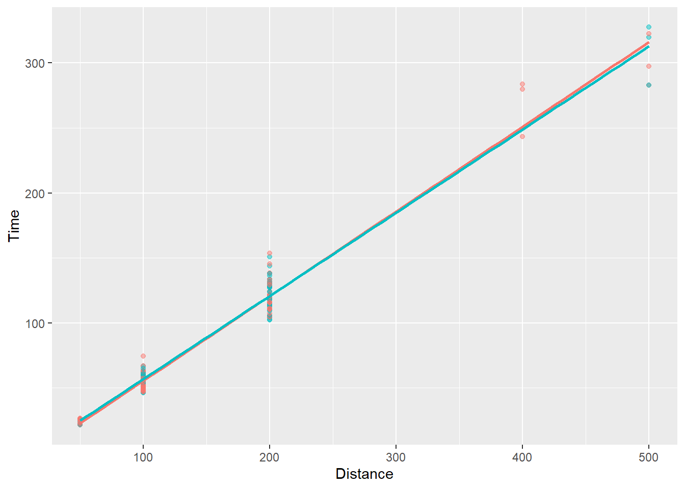
You see that the linear fits are almost identical for the two schools. You can comment out show.legend = F to see the school names.
What about across male and female swimmers?
SWIM |>
filter(!is.na(Name),
Time < 1000,
Team != "Mixed"
) |>
ggplot(mapping = aes(x = Distance,
y = Time,
color = Team)) +
geom_point(
alpha = .5,
show.legend = FALSE
) +
geom_smooth(
method = "lm",
se = FALSE,
show.legend = FALSE
)`geom_smooth()` using formula = 'y ~ x'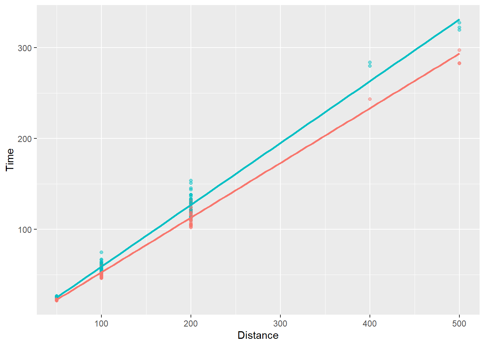
The visualization now shows that the slope differs by subgroup, in particular that the slope is steeper for female swimmers. Again, comment out show.legend = F to see. We can add confidence intervals or error to the fit line on the plot but doing so is something we will deal with in the topic on visualizing uncertainty. That being said, the astute student of statistics should also know there is uncertainty to the lint-of-best-fit because it represents a fit of the current data, which may have sampling error. Bootstrapping the model fit will allow or visualization of uncertainty of the model fit.
Bubble Plots
When the decorative element is point size, the plot type is referred to as a bubble plot and this is a special case of a multiclass scatterplot. Though some may refer to is as such, technically speaking, adding a color element is not bubble plot for obvious reasons.
Mapping existing variables to aesthetics
We will map a variable to the size aesthetic of the point plot. For now, don’t worry about arguments other than size.
We can map size = Time:
SWIM |>
filter(!is.na(Name),
Time < 1000
) |>
ggplot(mapping = aes(x = factor(Distance), y = Time)) +
geom_point(
mapping = aes(size = Time),
alpha = .2
)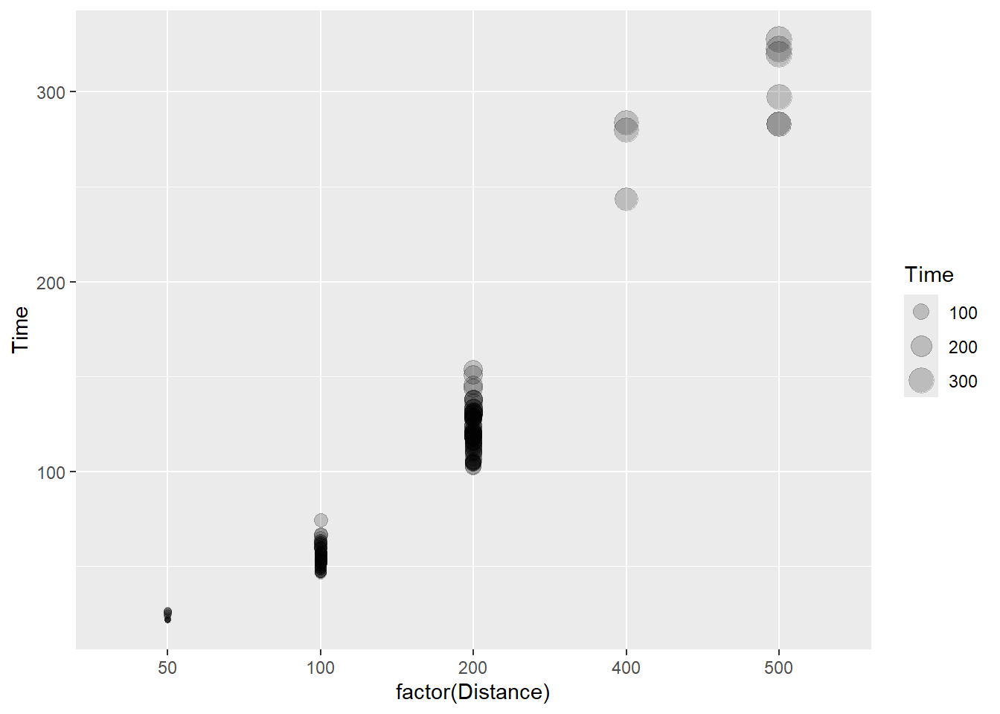
The bubbles here simply represent the y variable mapped to the size aesthetic. We are not conveying a third variable in this plot but rather confounding size with an existing variable in the point plot. One thing to know is that the visual system loves size and to shading (e.g,. contrast). Both are present here, so be mindful of any bias such a plot has on visual attention and perception. We will address such issues when we address concepts of attentional control.
Mapping new variables to aesthetics
We will look at the data in a different way now. The data frame contains split times for the first 50. A split time is a time measurement of partial distance in swimming. For example, for a 200 meter event, you can measure split times for ways you a split the event (e.g., 25, 50, 100 meters). A swimmer who maintains the same time across splits is performing differently from one who swims at different paces across splits.
Let’s look at split times for 50 meters as a function of distance. You will notice that Distance = 50 is dropped out of the plots because there is no split time.
SWIM |>
filter(!is.na(Name),
Time < 1000
) |>
ggplot(mapping = aes(x = Distance, y = Split50)) +
geom_point(alpha = .4)Warning: Removed 14 rows containing missing values or values outside the scale range
(`geom_point()`).
You can see that the split times for the first 50 meters seems to increase as the distance of the event increases. Swimmers are pacing differently.
And for splits and even time:
SWIM |>
filter(!is.na(Name),
Time < 1000
) |>
ggplot(mapping = aes(x = Split50, y = Time)) +
geom_point(alpha = .4)Warning: Removed 14 rows containing missing values or values outside the scale range
(`geom_point()`).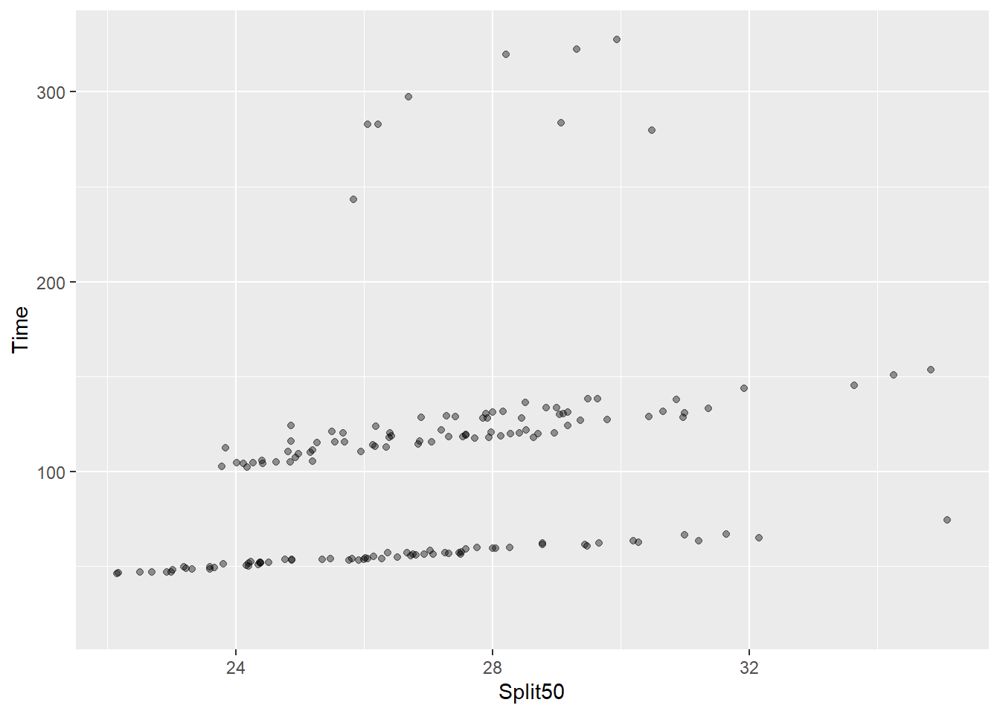
Longer split times are associated with overall longer event times.
Mapping a new variable like Distance to point size will adjust the size of the points by the event distance.
SWIM |>
filter(!is.na(Name),
Time < 1000
) |>
ggplot(mapping = aes(x = Split50, y = Time)) +
geom_point(mapping = aes(size = Distance),
alpha = .4
)Warning: Removed 14 rows containing missing values or values outside the scale range
(`geom_point()`).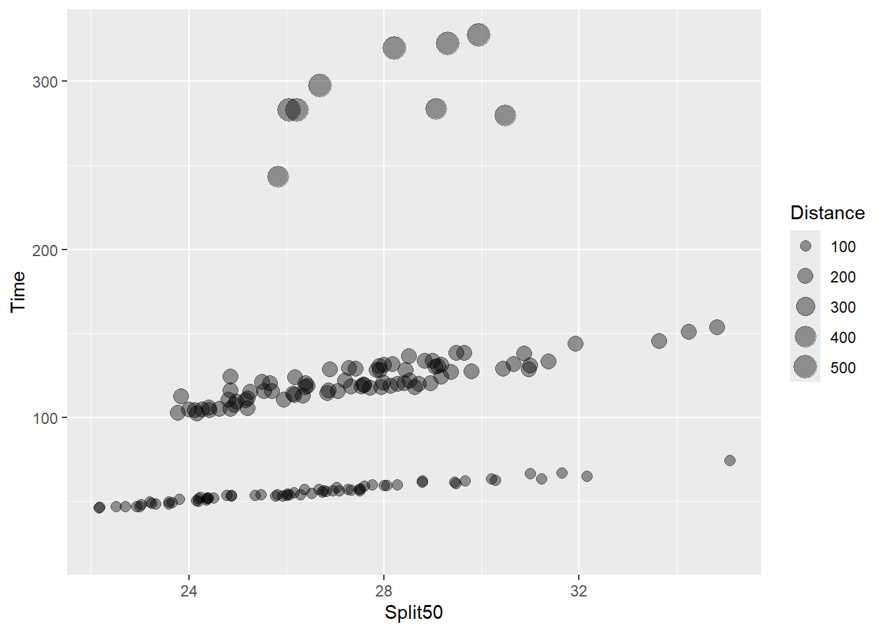
We can see that the point diameter increases with distance. Although this bubble plot introduces a new variable, Distance, to the plot which was not visualized before, it really fails to communicate something useful in the data that was not already presented.
What if we plotted Time as as function of Distance and mapped Split50 to the size aesthetic?
SWIM |>
filter(!is.na(Name),
Time < 1000
) |>
ggplot(mapping = aes(x = Distance, y = Time)) +
geom_point(mapping = aes(size = Split50),
alpha = .4
)Warning: Removed 14 rows containing missing values or values outside the scale range
(`geom_point()`).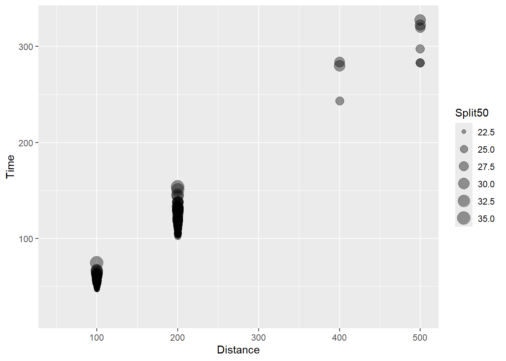
This bubble plot now illustrates that the split times vary within the event distance and is associate with longer event times.
And if we map event types to color:
SWIM |>
filter(!is.na(Name),
Time < 1000
) |>
ggplot(mapping = aes(x = Distance, y = Time)) +
geom_point(mapping = aes(size = Split50, color = Event),
alpha = .3,
show.legend = FALSE
)Warning: Removed 14 rows containing missing values or values outside the scale range
(`geom_point()`).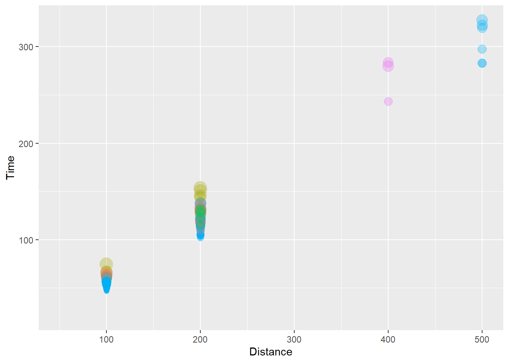
We can see that the larger point sizes reflecting longer split times also appears to be associated with the event participated in. Notice the color palette used and the size of the points in the legend. Some color are difficult to differentiate when the alpha is dialed down. But without lowering alpha, the points would have a different problem. If this were a plot we wanted to share, we would need to fix it a lot. Later on, we will cover ways to change colors, the size of the points in the legend later, change the scale and tick marks on the axes, etc.
You can see how in some cases, bubble plots may be appropriate for presenting 4-Dimensional data for which two variables are numeric (X and Y), an additional variable is categorical and mapped to color (or shape) and another variable is numeric and mapped to size.
{ggplot2}} will also provide warnings when applying a discrete variable to an aesthetic like size, for example, Using size for a discrete variable is not advised.
Connected Scatterplots
There are instances when you may wish to visualize the order of events in a scatterplot. For example, the demand and price or a good may be associated but those may also change at different time points. These are sometimes presented as connected scatterplots.
Whereas geom_line() will create a line between x and y data (imaging invisible points), geom_path() will connect those x and y positions to reveal other associations like the time pattern.
Let’s compare the two functions using some made up data.
DAT <- data.frame(
x = c(1, 2, 3, 4, 5, 4, 7),
y = c(12, 16, 13, 15, 19, 20, 22),
label = c(2013:2019)
) A geom_line():
DAT |>
ggplot(mapping = aes(x = x, y = y)) +
geom_line()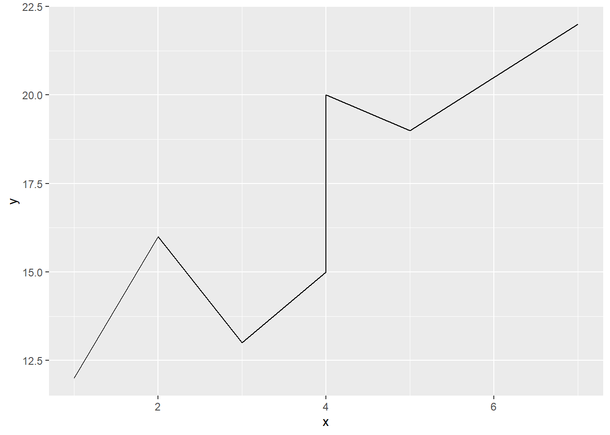
A geom_path():
DAT |>
ggplot(mapping = aes(x = x, y = y)) +
geom_path(color = "red")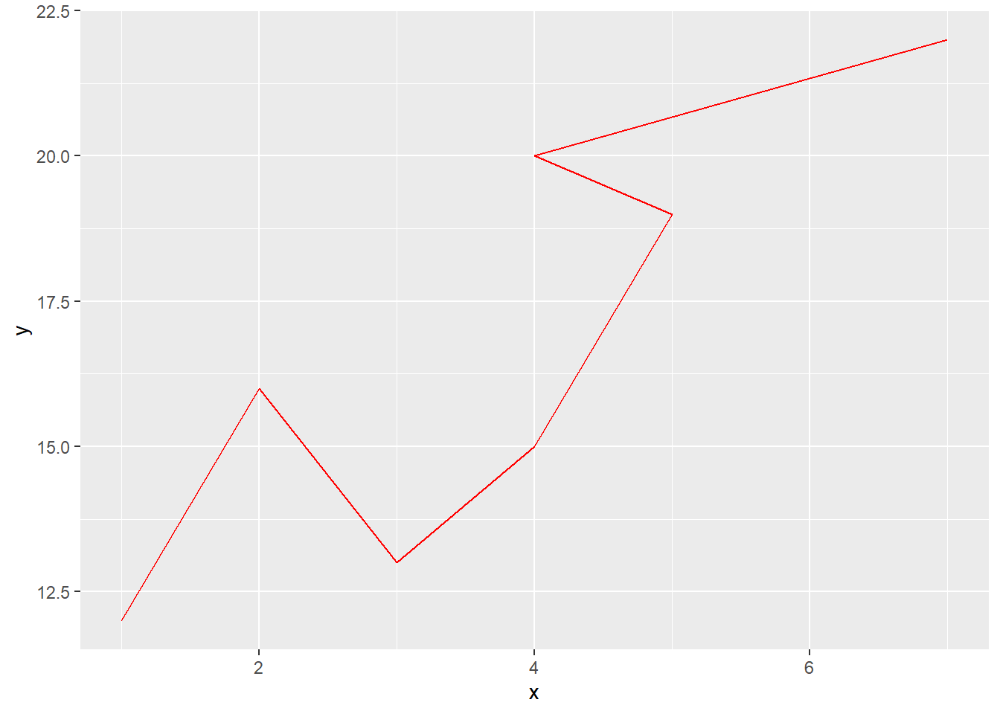
Adding labels as text (and changing their color and size):
DAT |>
ggplot(mapping = aes(x = x, y = y)) +
geom_path(col = "red") +
geom_text(mapping = aes(label = label,
size = factor(label),
col = label)
)Warning: Using size for a discrete variable is not advised.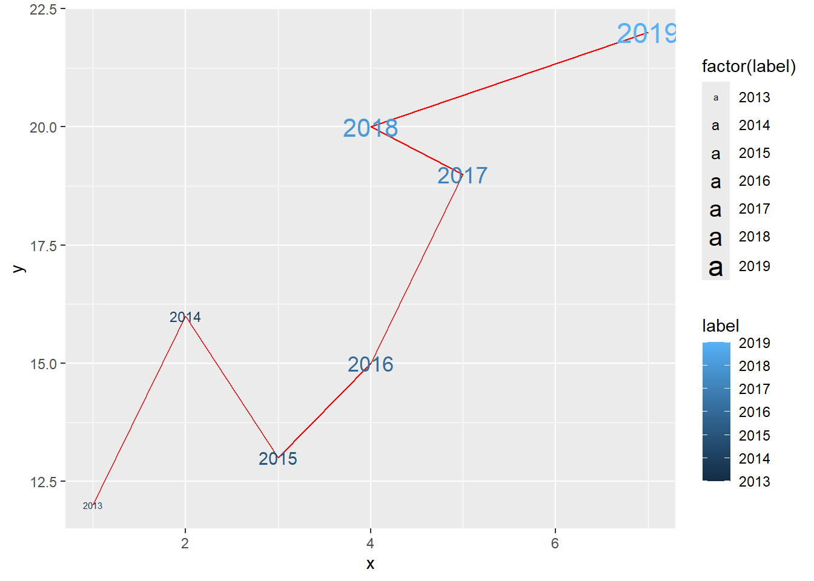
Note that geom_line() does not work well with the existing swim data. Points will be connected.
SWIM |>
ggplot(mapping = aes(x = Distance, y = Time)) +
geom_line()
And geom_path() will connect the based on the order of the date but this type of plot is not relevant here as there is no order or time course.
SWIM |>
ggplot(mapping = aes(x = Distance, y = Time)) +
geom_path()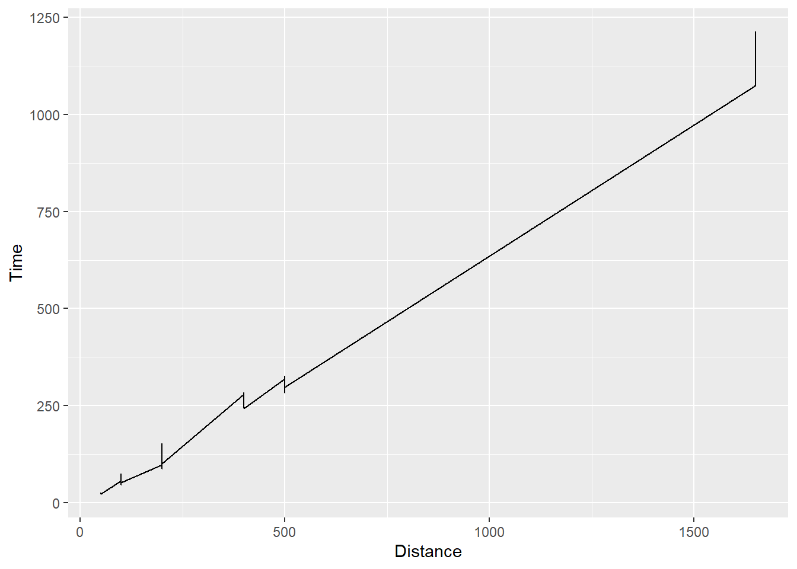
Session Info
R version 4.4.1 (2024-06-14 ucrt)
Platform: x86_64-w64-mingw32/x64
Running under: Windows 11 x64 (build 22631)
Matrix products: default
locale:
[1] LC_COLLATE=English_United States.utf8
[2] LC_CTYPE=English_United States.utf8
[3] LC_MONETARY=English_United States.utf8
[4] LC_NUMERIC=C
[5] LC_TIME=English_United States.utf8
time zone: America/Los_Angeles
tzcode source: internal
attached base packages:
[1] stats graphics grDevices utils datasets methods base
other attached packages:
[1] htmltools_0.5.8.1 DT_0.33 vroom_1.6.5 lubridate_1.9.3
[5] forcats_1.0.0 stringr_1.5.1 dplyr_1.1.4 purrr_1.0.2
[9] readr_2.1.5 tidyr_1.3.1 tibble_3.2.1 ggplot2_3.5.1
[13] tidyverse_2.0.0
loaded via a namespace (and not attached):
[1] utf8_1.2.4 generics_0.1.3 lattice_0.22-6 stringi_1.8.4
[5] hms_1.1.3 digest_0.6.36 magrittr_2.0.3 evaluate_0.24.0
[9] grid_4.4.1 timechange_0.3.0 fastmap_1.2.0 Matrix_1.7-0
[13] R.oo_1.26.0 rprojroot_2.0.4 jsonlite_1.8.8 R.utils_2.12.3
[17] mgcv_1.9-1 fansi_1.0.6 scales_1.3.0 cli_3.6.3
[21] rlang_1.1.4 crayon_1.5.3 R.methodsS3_1.8.2 splines_4.4.1
[25] bit64_4.0.5 munsell_0.5.1 withr_3.0.1 yaml_2.3.10
[29] tools_4.4.1 tzdb_0.4.0 colorspace_2.1-0 here_1.0.1
[33] vctrs_0.6.5 R6_2.5.1 lifecycle_1.0.4 htmlwidgets_1.6.4
[37] bit_4.0.5 pkgconfig_2.0.3 pillar_1.9.0 gtable_0.3.5
[41] glue_1.7.0 xfun_0.45 tidyselect_1.2.1 rstudioapi_0.16.0
[45] knitr_1.47 farver_2.1.2 nlme_3.1-164 rmarkdown_2.27
[49] labeling_0.4.3 compiler_4.4.1